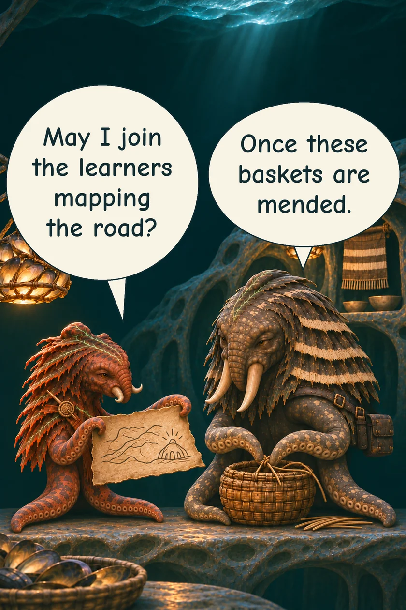
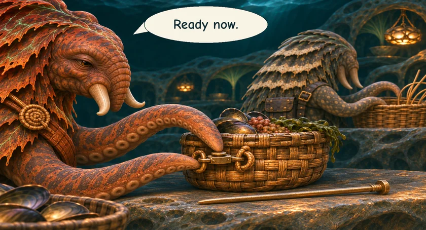
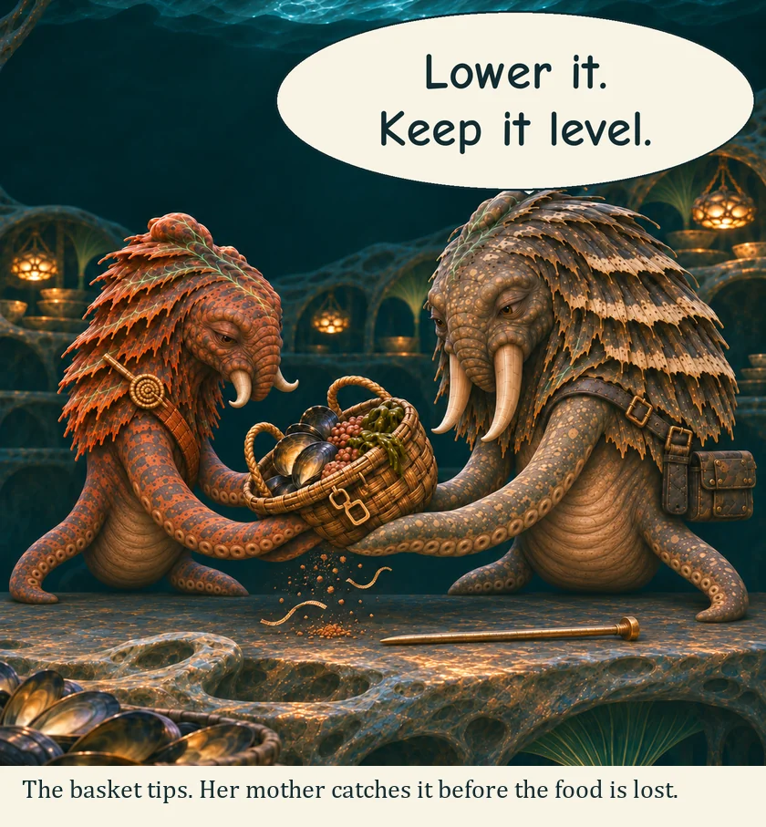
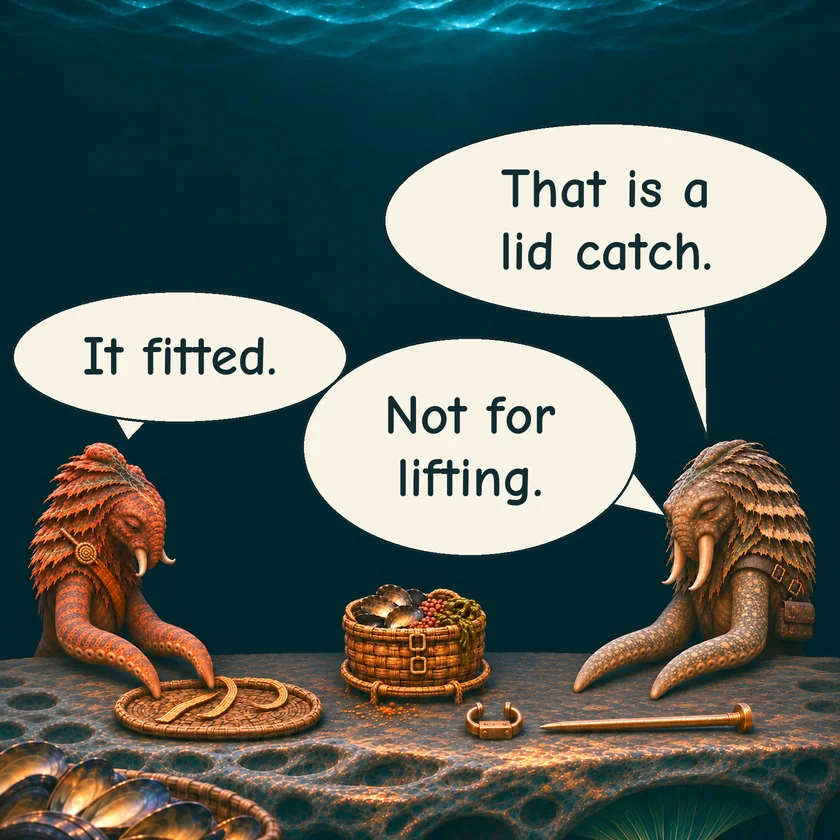
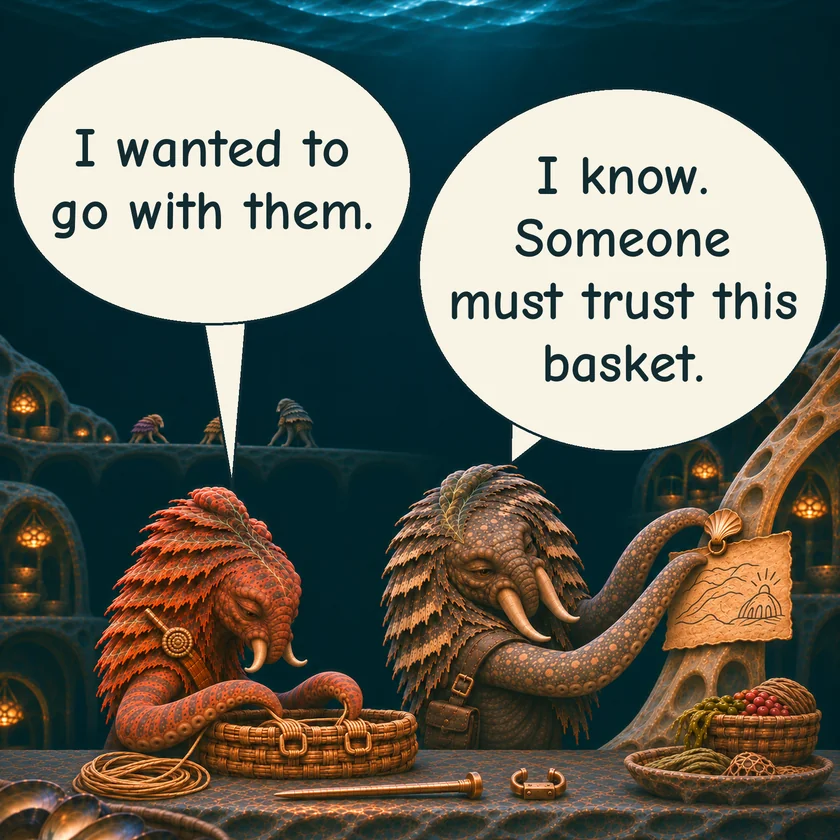
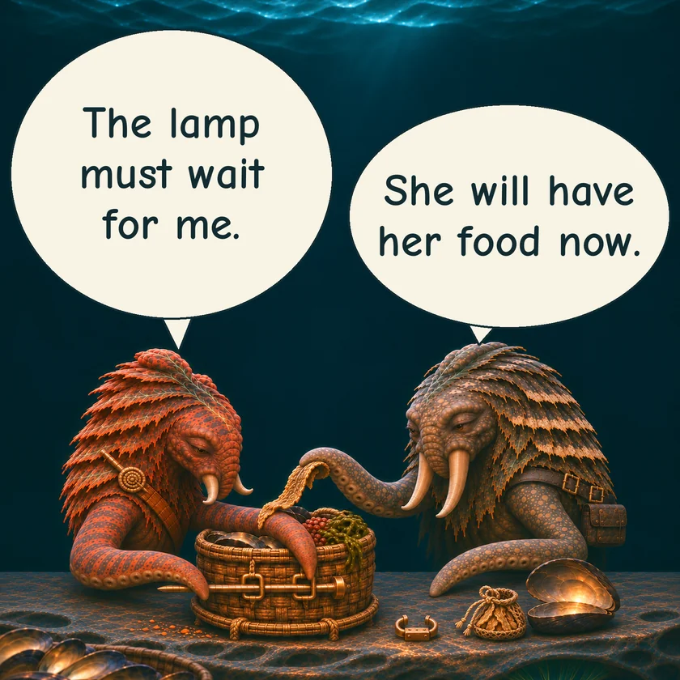

THE ORUUN · TEN YEARS BEFORE HUMANITY AWAKENS
Tesh and the Basket
Tesh wants to map a road. First, she must finish a basket someone can trust.
TESH · Reef learnerHER MOTHER · Reef tender






The mapping party leaves without her. Her mother stays to help her begin again.
Read the words
May I join the learners mapping the road?
Once these baskets are mended.
Ready now.
The basket tips. Her mother catches it before the food is lost.
Lower it. Keep it level.
That is a lid catch.
It fitted.
Not for lifting.
I wanted to go with them.
I know. Someone must trust this basket.
The lamp must wait for me.
She will have her food now.